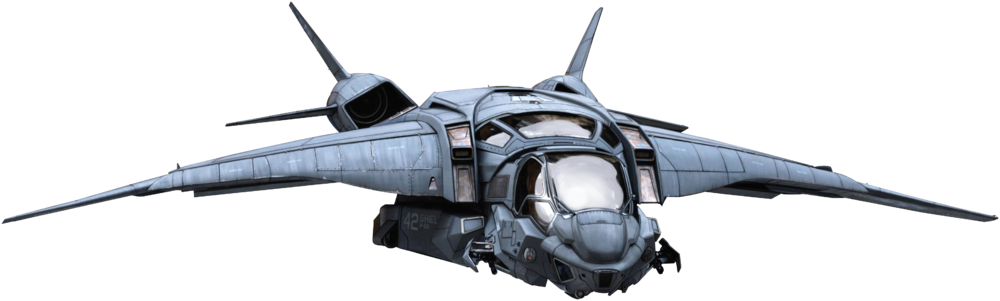
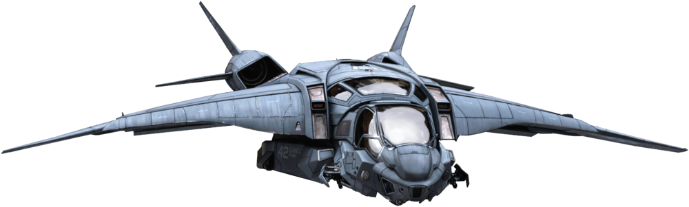

I AM IRON MAN
Everybody wants a happy ending, right? But it doesn't always roll that way. Maybe this time. I'm hoping if you play this back... it's in celebration. I hope families are reunited. I hope we get it back and something like a normal version of the planet has been restored, if there ever was such a thing.
God, what a world. Universe now. If you told me ten years ago that we weren't alone, let alone you know to this extent...I mean, I wouldn't have been surprised. But come on, you know. That epic forces of darkness and light that have come into play. And for better or worse, that's the reality Morgan's gonna have to find a way to grow up in. So I thought I better record a little greeting, in the case of an untimely death, on my part. Not that death at any time is ever timely.
This time travel thing that we're gonna try and pull off tomorrow... it's got me scratching my head about the survivability of all this. But then again that's the hero gig. Part of the journey is the end. What am I even tripping for? Everything is going to work out exactly the way it's supposed to.